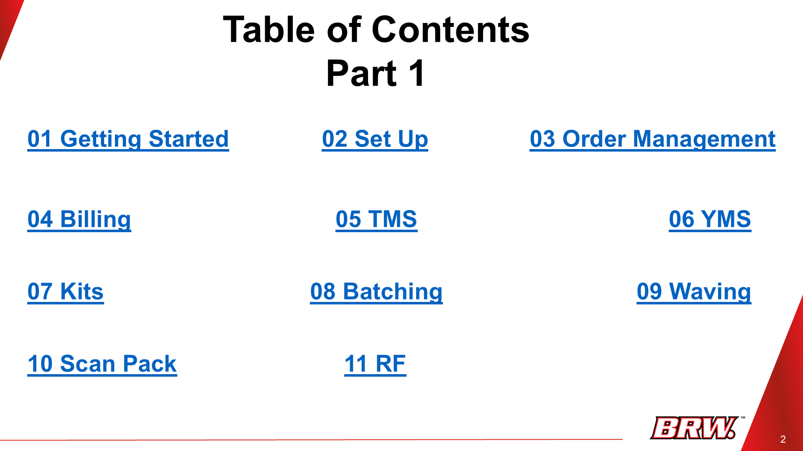

Lesson 1: Getting Started
1 of 3
Logging In
To begin using DaVinci WMS:
- Open your web browser
- Navigate to the provided DaVinci WMS URL
- Enter your Username and Password when prompted
Exploring the Dashboard
After logging in, you’ll land on the DaVinci dashboard. This dashboard gives you a quick overview of key operational metrics, such as:
- Occupancy
- Inventory
- Other performance indicators
Take a moment to familiarize yourself with the layout. It’s designed to help you quickly monitor warehouse status.
The Navigation Menu
In the top-left corner, you’ll see the three-line menu icon (also known as the “hamburger menu”). This dropdown is essential for moving around the system.

From here, you can:
- Create new orders
- Edit existing records
- View various system features
Get familiar with this menu — you’ll use it constantly while working in DaVinci WMS.
üìù Lesson 1 Quiz
1. Where do you log in to DaVinci WMS?
2. What does the dashboard show?
3. What is the purpose of the three-line menu?